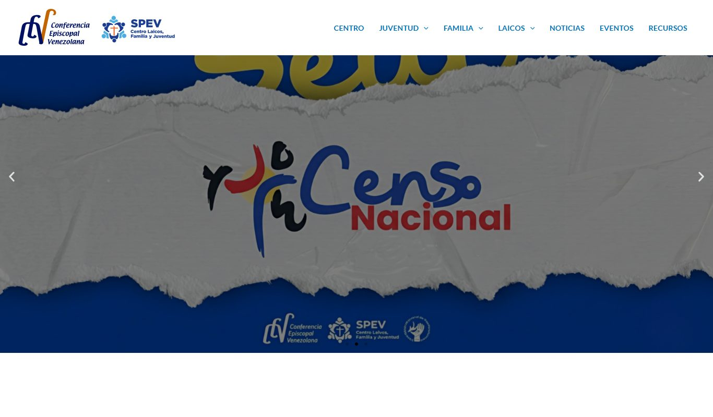
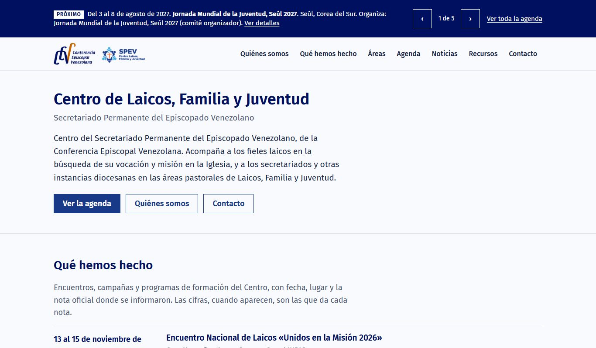
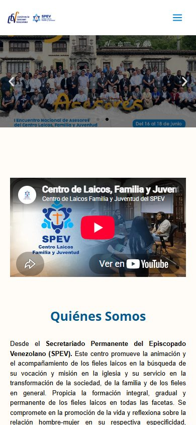
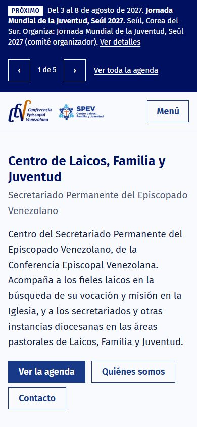

Antes y después
El «antes» es el sitio actual del Centro, que no se modificó. El «después» es la propuesta en revisión. Las capturas son de la primera pantalla de cada uno, tomadas el 24 de noviembre de 2026.
El sitio actual no permite abrirse dentro de otra página (su servidor lo impide), por eso no hay vista en vivo aquí: use los enlaces, que se abren en pestañas separadas.
Escritorio
Antes: sitio actual

Después: propuesta

Teléfono
Antes: sitio actual

Después: propuesta

Qué cambió y por qué
| Tema | Antes | Después | Motivo |
|---|---|---|---|
| Estructura | Menú con tres ramas y 5 o 6 subpáginas cada una. 13 páginas del menú están vacías. | Una sola página con secciones y accesos. Las tres áreas van en pestañas y la agenda, el detalle de cada evento y los textos legales están dentro de la misma página. | No enviar a páginas vacías y que un equipo pequeño pueda mantenerlo. |
| Primera pantalla | Carrusel de carteles, sin título principal. | Nombre, descripción factual y tres accesos (agenda, quiénes somos, contacto). | Que quien llega por primera vez entienda quién es el Centro. |
| Eventos | La página Eventos está vacía. | Franja de eventos, agenda con archivo y detalle de un evento, con fuente y estado. | Un lugar único y confiable. La página solo informa; la Conferencia organiza. |
| Qué se ha hecho | No existe. | Diez hechos con fecha, lugar y enlace a la nota oficial. | Mostrar la actividad con credibilidad. Lo no verificado dice «por confirmar». |
| Equipo | Página oculta con teléfonos y correos individuales. | Nombre y cargo, sin contactos individuales. | Transparencia sin exponer datos personales. |
| Noticias | Tarjetas sin fecha visible en la portada. | Lista con la fecha real de cada nota. | Que se sepa qué es reciente. La última nota del sitio actual es del 14 de septiembre de 2026. |
| Videos | Videos pequeños; el de Radio María mide 242 × 136 píxeles. | Carril de videos 16:9 que se reproducen sin sonido solo cuando se ven. | Ver bien sin gastar datos. Sin movimiento reducido ni ahorro de datos no se reproduce solo. |
| Recursos | Descargas escondidas en páginas profundas. | Lista de cinco materiales con tipo y peso antes de descargar. | Conexiones lentas. Los archivos siguen alojados en el sitio actual. |
| Peso | Unos 5 MB y 155 solicitudes en la portada. | 165 KiB y 5 solicitudes en la portada, sin contar los videos. | Conectividad limitada en Venezuela. |
| Accesibilidad | 85 de 268 imágenes sin texto alternativo. La portada no tiene título principal. | Texto alternativo, foco visible, contraste AA y uso con teclado. Verificado con axe-core. | Que cualquier persona pueda usarlo. |
| Textos | Errores como «Res de Movimientos», «Comision» y «Meteriales». Texto de una plantilla de viajes visible en Coordinación nacional. | Ortografía corregida y sin texto de plantilla. | Credibilidad institucional. |
| Legal | Sin privacidad, cookies ni términos. | Borradores con [POR CONFIRMAR] para revisión del Centro y de un asesor legal. | Un sitio que muestra videos y enlaces de terceros necesita esos textos. |
Propuesta en revisión, aún no es el sitio publicado del Centro.